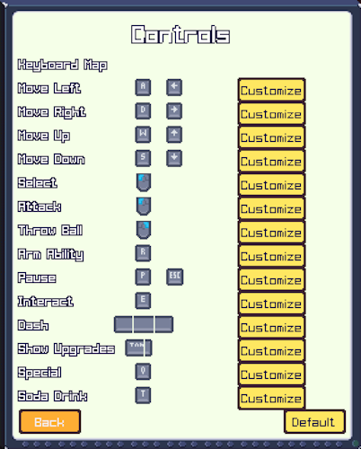

Sluggerpunk
A gripping 2D survivors roguelike. Navigate challenges, hone strategies, and clash with formidable foes in the underground.

One of my biggest accomplishments in Sluggerpunk was implementing 100% customizable key bindings for both keyboard and controller. Control customization is one of the most sought-after accessibility options in gaming today — ensuring full customization for both input methods enables players who couldn't use the defaults to engage with the game on their own terms.